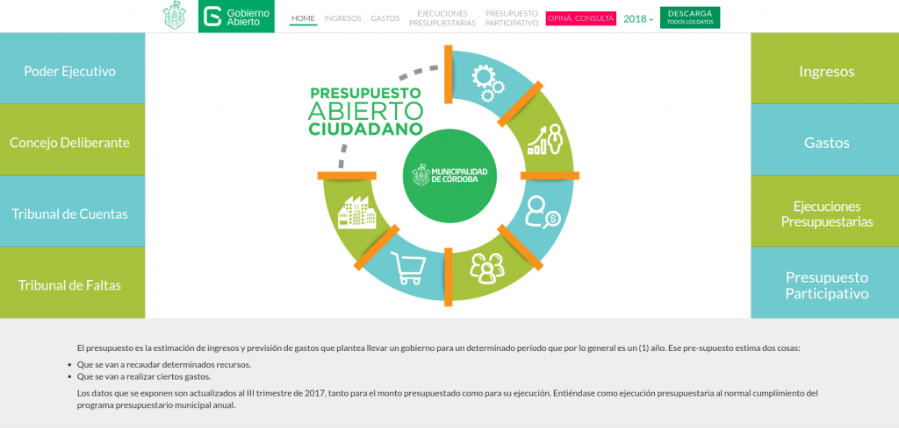

Actualmente el Consejo Profesional de Ciencias Informáticas de la Provincia de Córdoba (CPCIPC) tiene potestad de control de la actividad de todos los informáticos de Córdoba. Esto es así desde 1987, la ley 7642 lo faculta para regular el ejercicio de la profesión.
[...] las empresas de software de la provincia (excluyendo multinacionales) emplearon, durante el primer trimestre de 2017, a 8.025 personas [...]
Por otro lado el Consejo tiene 1223 (este parece ser el número) matriculados. En la última elección votaron sólo 281 personas, el 23% estimado del padrón.
Como la ley 7642 obliga a todos los que ejerzan este oficio/profesión a estar matriculados podríamos estimar que hay hoy miles de personas fuera de la ley. Esto sucede desde hace años, el Consejo no ha podido/sabido conducir el ejercicio de la profesión en 30 años de vigencia de la ley.
Esto le permite entonces discrecionalmente formular denuncias cada vez que le parece útil. Hoy el número de matriculados vs personas ejerciendo de hecho la profesión parece indicar que el CPCIPC no cuenta con el consenso de la comunidad de desarrolladores de software. La bajísima participación en las elecciones parece apoyar esa hipótesis.
Ante esta realidad ¿que podemos proponer? ¿seguimos así?
En varias ocasiones funcionarios de otros gobiernos nos han consultado sugerencias para comenzar con un portal de Gobierno Abierto. Estas son las sugerencias que envié, creo que podrían ser útiles para dar los primeros pasos.
Esto está escrito desde la perspectiva de alguien que esta aprendiendo y atravesando este proceso (que no se termina) en equipo.
En primer lugar hay que tener en cuenta que los pilares (esto es una versión simplificada) de Gobierno Abierto son:
Transparencia: Se refiere a la apertura de datos de gestión.
Participación: Que los vecinos tengan un espacio donde enviar sus opiniones, sugerencias, dialogar con funcionarios y recibir respuestas.
Colaboración: Espacios en la que los vecinos (generalmente Universidades, ONGs, Colegios Profesionales, empresas, especialistas de diferentes áreas e incluso otros gobiernos) se sientan a una mesa a opinar e influir sobre las políticas públicas.
En todos los gobiernos ya hay algo de esto siempre. Muchas veces no está centralizado en forma de una oficina de Gobierno Abierto. No hay que empezar desde cero nunca,
El primer paso es siempre ver que es lo que de Gobierno Abierto ya hacen y designar a alguien como responsable u organizador. No tiene que ser un funcionario nuevo, puede ser a alguien que tenga la vocación y el deseo de tomar la bandera de la apertura.
En el sitio web Municipal pueden abrir una sección llamada Gobierno Abierto con estos tres pilares como sub-secciones (si no tienen colaboración pueden ser dos).
En cada una pueden informar lo que tienen y en lo que están trabajando. El organizador del área tiene que tener contacto y reuniones con todas las áreas para detectar estos contenidos. Es muy importante la sensibilización en estos temas de los funcionarios de todas las áreas.
Transparencia
Suban datos que existan. Por ejemplo (cualquiera de estas esta bien para empezar):
La lista de funcionarios [*], sus vías de comunicación [*].
Las Declaraciones Juradas de los funcionarios [*], sus sueldos [*], etc.
Mapas con puntos de interés de la ciudad (centros de salud, escuelas, etc). Esto se hace muy fácil con Google MyMaps. Si cargan varios mapas podrían hacer un mini-portal de mapas, Portal de mapas de Córdoba.
Datos generales de cultura [*], educación [*], salud [*], transporte [*], etc. Lo que tengan a mano y esté ordenado como para compartir.
Con todos los datos debes que tener compromiso de actualización con regularidad.
Siempre que sea posible liberen los datos en Excel, OpenOffice o CSV que permiten su reutilización. Evitar en lo posible PDFs o archivos de word con tablas que no permiten su uso por terceros.
A mediano plazo pueden usar herramientas muy interesantes y accesibles para una primera versión del portal de datos: Junar o Andino
Participación
Aquí deben describir canales de participación que ya existan, pueden ser reuniones periódicas con vecinos, presupuesto participativo, etc.
Sería muy bueno que agreguen un simple formulario web donde la gente pueda cargar sus sugerencias o ideas. Sería bueno que puedan categorizar esto para hacer alguna estadística que incluso podría publicar periódicamente en la sección de transparencia.
Otra idea es que en la lista de funcionarios en la web coloquen las vías de comunicación para que los vecinos se comuniquen. Esto en general ya existe pero no se lo destaca como vía de participación ciudadana.
Colaboración
Pueden listar las organizaciones, Universidades, Colegios Profesionales o instituciones con los que mantengan diálogo permanente o específico sobre algún tema. Si tienen convenios de colaboración firmado sería bueno que los publiquen.
Esta quizás sea la parte más difícil de Gobierno Abierto, puede quedar para una versión siguiente.
Software libre
En la gestión 2016-2019 la Secretaría de Modernización de la Municipalidad de Córdoba se trabajó en la política de gobierno abierto haciendo hincapié en que el Software Libre es una política de Gobierno Abierto importante.
La Municipalidad de Córdoba tiene un repositorio de GitHub con todos los códigos que se han abierto. Cualquier municipio que entienda que la tecnología se puede construir con participación ciudadana y de manera transparente debe abrir un espacio similar.
Un resumen de lo que se desarrolló en los últimos 3 años se encuentra en esta publicación.
Algunos productos de software liberados:
Dendrograma de funcionarios
Tener una visualización dinámica y de fácil comprensión de los funcionarios públicos ayuda a entender a la ciudadanía como es la estructura jerárquica de gobierno. Es una forma alternativa a tradicional organigrama.
La municipalidad de Córdoba tiene el dato del presupuesto en su máximo grado de apertura. El presupuesto anual en gastos y recursos se encuentra publicado, en PDF con sus respectivas firmas que lo validan, en .xls permitiendo al ciudadano trabajar con los datos. Finalmente lo tiene explicado de forma interactiva y sin tecnicismo.

Este producto es muy utilizado en colegios y universidades para explicar el presupuesto municipal.
El presupuesto abierto ciudadano se encuentra en el siguiente link: Aquí
Nota importante: La base de datos del presupuesto está subido a google drive. El aplicativo toma los datos y los visualiza automáticamente.
Además de la visualización dinámica se puede acceder al los datos brutos en formatos reutilizables.
En las últimas semanas me encontré con dos problemas similares:
Colaborar con la Radio de Mendiolaza para que su transmisión salga por internet
Escuchar la Radio Gen desde el teléfono. Su app oficial pedía muchos permisos y en el navegador del teléfono me pedía flash instalado
En el caso de la Radio de Mendiolaza el problema era más complejo por que no había un stream. Había que crearlo y después embeberlo en una aplicación.
Despues de mucho aprender quedó el stream funcionando y la aplicación en Google Play. Use IceCast2 para el stream y Cordova para compilar una app super simple. Ambas cosas quedaron en un repositorio por si a alguien más le sirve la experiencia: [VER REPOSITORIO]
Teniendo el primer proyecto terminado el segundo es más fácil.
Simplemente replique la aplicación y conecte el stream que la radio ya tiene y publica en su web. Quedó tambien como software libre. [VER REPOSITORIO]